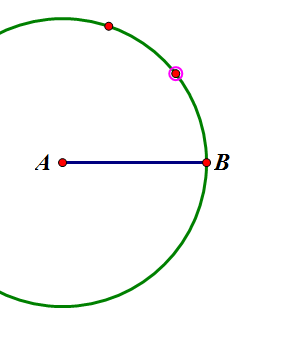

几何画板基础入门教程
作者：TeliuTe 来源：基础教程网
十、线段垂直平分线 返回目录 下一课尺规作图要求有作图痕迹，可以用圆弧来实现；
1、线段垂直平分线
1）用线段工具，按住Shift键画一条线段，文字工具标上AB；
2）选中A点和线段，点菜单“构造 - 以圆心和半径作圆”；
3）然后在菜单“构造 - 圆上的点”，在圆上取两个点，位置大约在线段正上方；

4）按逆时针方向，依次选择“点 - 弧 - 点”，再点“构造 - 圆上的弧”；
5）再在圆的下方取两个点，位置在线段的正下方；
6）按逆时针方向，依次选择“点弧点”，构造下方的圆弧；
7）隐藏圆和弧的各个端点，得到上下两个圆规的痕迹；
8）同样的方法，用B点作圆心，线段为半径，画另一个圆，取点作弧，上下都作，隐藏圆；
9）分别选中弧，构造交点；
10）选中上下两个交点，构造直线，就可以得到线段AB的垂直平分线；
本节学习了尺规作图画垂直平分线的基础知识，如果你成功地完成了练习，请继续学习下一课内容；
本教程由TeliuTe制作|著作权所有
基础教程网：http://teliute.org/
美丽的校园……
转载和引用本站内容，请保留作者和本站链接。